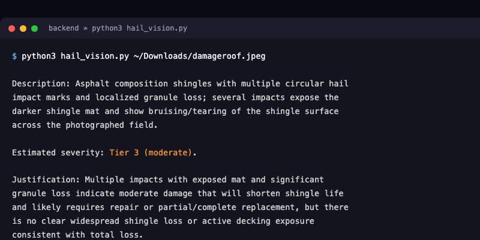

06 / The AI Model
The AI Model
This is the centerpiece of the pipeline: a vision model that looks at a real roof photo and reasons about what it sees, not a rules-based formula, an actual AI system making a judgment call.
How It Works
The model is a vision-capable model deployed on Azure AI Foundry. It doesn't classify damage the way a traditional trained image classifier would, it's a general-purpose vision model, and we direct it with a specific prompt telling it exactly what to look for: describe what it sees, estimate a severity tier from 1 to 5, and justify that tier in plain language. That means every result comes with real reasoning attached, not just a number with no explanation behind it.
How We Built It
Getting this working took a few real steps. First, deploying a vision-capable model on Azure AI Foundry and confirming it could actually assess hail damage from a photo. Then writing a Python script to call it directly with an image and a prompt. Then wrapping that in a Flask backend so a website could reach it over the internet instead of only from a terminal. That backend is now deployed on Render, a real hosting service, so the connection stays live even when our laptops are off.
Try It Live
Try It Live
This is a real, working connection to a vision model deployed on Azure AI Foundry, not a simulated result. Upload a roof photo and it will actually analyze it.
In case the live demo isn't reachable right now, here's real output the model produced on an actual roof photo:

Real Example
Real Example
This isn't a mockup. Here's an actual roof photo run through our AI model, with the real output it produced.

Tier 3, Moderate Damage
Asphalt composition shingles with multiple circular hail impact marks and localized granule loss. Several impacts expose the darker shingle mat, consistent with moderate damage that would shorten shingle life and likely require repair.
What's Next
What's Next
Right now, the model works through prompting alone, it hasn't been trained on our own data. A real next step would be fine-tuning it on actual historical Travelers claims once that data is available, so it learns the specific patterns in real claims instead of general knowledge.
Longer term, one direction worth exploring is a feedback loop: as adjusters review flagged cases and confirm or correct them, that feedback could be used to keep improving the model over time, similar to reinforcement learning from human feedback. That would let the system get better the more it's actually used, instead of staying static.
- Fine-tuning on real data: move from general prompting to a model trained on actual Travelers claims history.
- Adjuster feedback loop: use adjuster corrections to improve the model over time, a reinforcement-learning-style approach.
- Expanded fraud forensics: extend the same vision model to pixel-level manipulation detection, not just damage assessment.